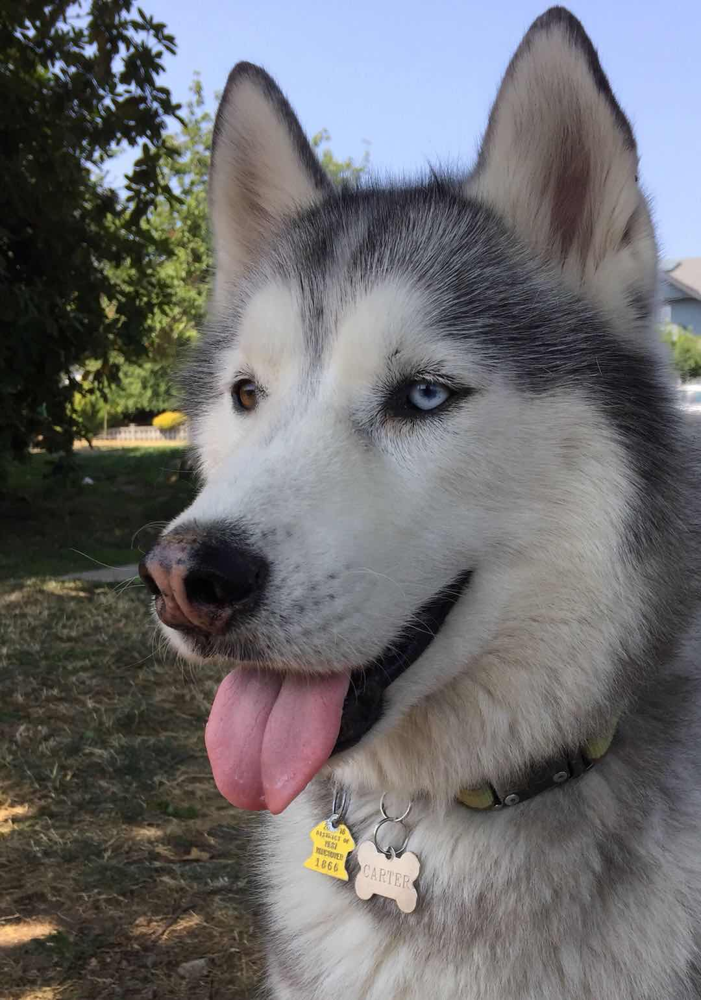

Yellow Labrador retriever standing in front of the cabinet that contains their treats.
Yellow Labrador retriever runs while carrying a tennis ball.
Yellow Labrador retriever sits on a dog bed outside.
Yellow Labrador retriever sleeps on a couch.
Hazel's Likes
Hazel likes to swim and catch her stick in the water.
Hazel likes to go on long walks.
Hazel likes tough chewing toys.
Dukey
Brown, Pug, Jack Russell mix staring at the camera
Dukey is a 12-year-old Pug, Jack Russell mix and lives with me and my family in Ireland. He is a very small dog, but acts much bigger than his size. He may look like an old man but still has the personality of a new-born puppy.
Dukey’s favorite treat are rich tea cookies, as well as anything that falls off of the table at meal time. The rest of the family may call him the family dog, but both him and I know he’s really my dog, and one of my best friends.
Photo Gallery
Likes
Cookies
Blankets
Walks (but not long ones)
Jojo
White/light brown small Lhasa-Apso
Jojo is a 14-year-old dog that has grown up with me. He’s a Lhasa-Apso, which is a breed from Tibet that’s known to be a watchdog. Funny enough, Jojo acts exactly like a watchdog. He likes to spend his days sitting next to a window looking and barking at people passing by. He is only a watchdog though, as he gets scared very easily.
His favorite thing in life is food, and his favorite foods are sweet potatoes and naan. He loves walks as well; however, he will not go outside if it’s raining or if there’s a lot of snow on the ground. He’s taken some old blankets and pillows we had to make his own bed. He’s also trilingual, able to understand English, Hindi, and Japanese.
Photo Gallery
Likes
Being carried like a baby
Walks
Sleeping
Biscuit
Shiba inu sitting in front of pond with stones in the background
Biscuit is a 2-year-old Shiba inu dog. Shiba inus are energetic and playful dogs. Biscuit enjoys running outside in circles and then laying down in the grass in the sun for hours. He also likes going for occasional swims.
As energetic as Biscuit is, he also likes to relax. He loves to sleep in his dog bed and watch Netflix with his owners. His favorite treat is apples.
Photo Gallery
Likes
Going for walks
Swimming
Apples
Carlos
Blue parakeet crouching about to fly
Carlos is a blue parakeet/budgerigar that my older sister adopted from her friend in high school. Carlos is 9 years old and loves flying around the kitchen and standing on chandeliers. She has very loud chirps and loves to chatter when people play instruments. Although she can be aggressive at times and is very unfriendly towards strangers, she has a very soft bite.
Carlos has a sister named Einstein. We did not discover the genders of our pet birds until years after we named them. At night, Carlos always sleeps on her favorite yellow swing and will wake up in the same spot every morning in the upstairs of her cage ready to come out and play.
Photo Gallery
Likes
Spinach
Flying around
Taking baths
Carter

Carter is a husky with black, gray, and white fur. One of his eyes is blue, while the other one is brown. His nose is black but red in the middle. His fur is very fluffy and thick.
Carter was born in Seattle. However, my brother bought him and brought him to Boston. Whenever my brother did not have time to walk Carter, he would put him on the treadmill. When Carter became too much of a responsibility for my brother as a college student, he took Carter to Vancouver to live with my mom, sister, and me. Because we lived in the mountains, he would sometimes howl in the middle of the night whenever he saw a wild animal.
Whenever I threw him a ball, he ran to the ball but never brought it back to me. He would sometimes escape the backyard of our house if we forgot to close the gates by accident. Even if we looked for him everywhere and did not find him, he knew the way home and always came back in the end. He loved going to the forest and the beach. He had his own spot on the living room couch and would watch television with us if he was bored or tired.
Photo Gallery
Likes
Treats
Beach
Forest
Cheeto (Chicken)
Orange cat hanging paws off a cat tower
Cheeto is a cat who likes to eat a lot and play a lot. He has an obsession with his grandpa (human) and tries to get outside every single day. If he isn’t causing problems, he is usually hiding in a seven-foot-tall cat tree and sleeping. Another name for Cheeto is Chicken because sometimes he sits very scrunched up and ends up looking like a rotisserie chicken. He was nicknamed this by one of his friends, and now he understands it as his own name. He is about six years old and still acts like a younger cat, despite being middle-aged.